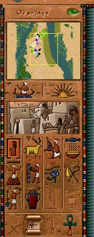

Camera Consolidation and a Growing Player Guide

This update has two halves: a round of engine refactoring that finally pulls the city camera into one place, and a batch of new wiki pages that start documenting the interface and the entertainment buildings.
The camera, consolidated
The city view has long been scattered across loose globals and free functions. It now lives in a single viewport_t that owns the camera and caches its derived state instead of recomputing it every frame.
- The old
g_city_viewglobal is renamed tog_camera, and all JS bindings were aligned to the new name. - Screen-to-tile and tile-to-pixel lookups are now methods on
viewport_trather than standalone functions — the coordinate math lives next to the state it reads. - Camera offset, zoom, and the sidebar collapse/expand slide all read from the same cached viewport state, removing several duplicate calculations in the render path.
This is a behaviour-preserving change — the city looks and scrolls exactly as before — but the rendering and input code is much easier to follow now that there is a single source of truth for "where is the camera looking."
More of the engine moves to script
The ongoing migration of debug and UI code out of C++ and into hot-reloadable JavaScript continued:
- The Clouds, Game Features, and Game Time debug panels are now drawn from scripts; the clouds debug state is exposed through a
__clouds_cloudobject. - Platform glue keeps shrinking the engine core: the main loop, per-frame callbacks, event polling (via an opaque
CoreEvent), mouse warp / relative mode (folded intog_mouse), and the virtual-keyboard APIs all moved into the platform layer, with Android, Vita, and Switch startup split into their own files.
The wiki starts documenting the interface
On the documentation side, the Player Guide gained a new Interface section, opening with a full Control Panel page. It walks through the top menu bar (File, Options, Help, Overseers, plus the live date / population / treasury read-outs and map rotation) and the side panel (minimap, overlay selector, advisor and world-map buttons, the twelve build categories, the action row, and the ratings with the game-speed control). Everything is documented from the engine's own JS configs — ui_sidebar_window.js and ui_top_menu_widget.js — and illustrated with in-game screenshots of each menu.
New building pages
Three buildings got dedicated pages, each with stats read straight from the engine config, a mechanics walk-through, tips, and a Developer Reference linking the exact source files:
- Booth — the smallest entertainment venue, with its juggler animation, placement preview, and right-click info window.
- Juggler School — the trainer that feeds Booths, Bandstands, and Pavilions, including its per-worker production rates and work animation.
- Vacant Lot — the empty residential plot every house grows from, which the engine treats as the unoccupied Crude Hut tier.
Building names across the buildings index, the mission pages, and related articles now cross-link to these dedicated pages, so it is easier to jump from a mission's "available buildings" list straight to the details.
Why this matters
The camera refactor pays down years of accumulated drift in the most-touched part of the renderer, and the script migrations keep moving content out of the binary so it can be edited without a recompile. The wiki work, meanwhile, is the start of a proper player-facing manual built directly from the live engine data — so the numbers on the page always match the numbers in the game.